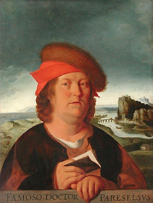

Sunday, January the 30th, 2011
back to: title, date or indexes
One has to admire Mr and Mrs von Hohenheim, the parents of Paracelsus (1493–1541), for giving their tot the Christian names Philippus Aureolus Theophrastus Bombastus. Two things worth remembering about Paracelsus are that he was the first person to call zinc zinc—actually he called it zincum—and that he kept a small avian devil imprisoned in the pommel of his sword. Samuel Butler noted this in Hudibras, where he wrote:
Bombastus kept a devil's bird / Shut in the pommel of his sword, / That taught him all the cunning pranks / Of past and future mountebanks.
